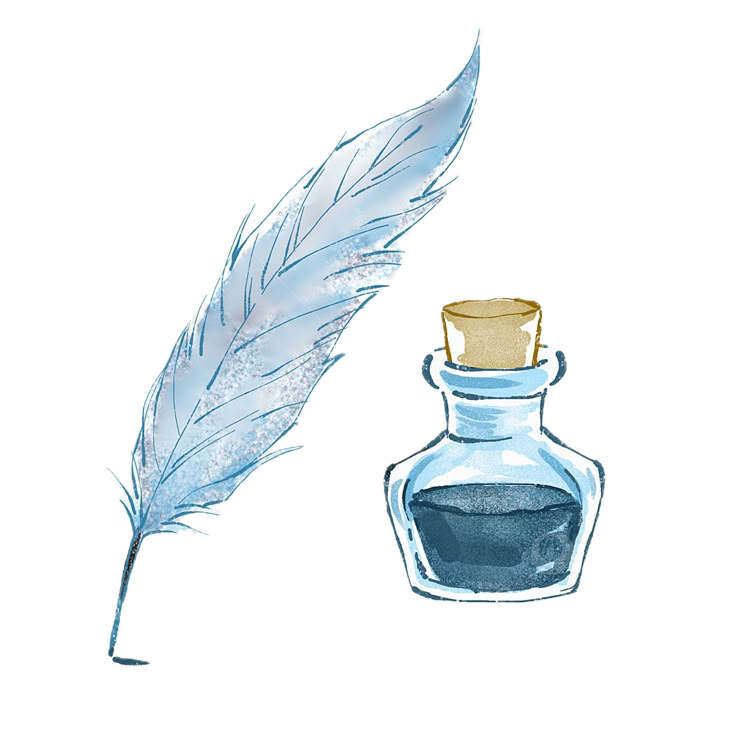
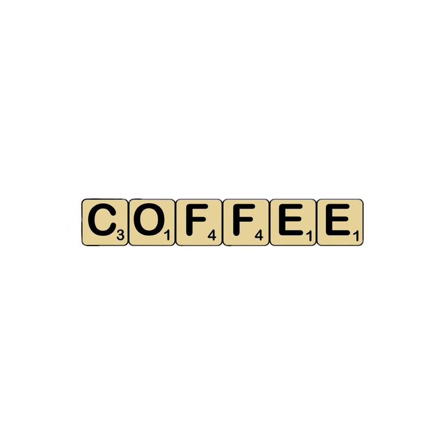
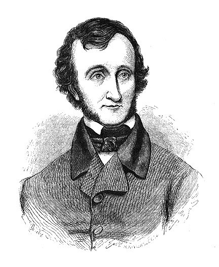
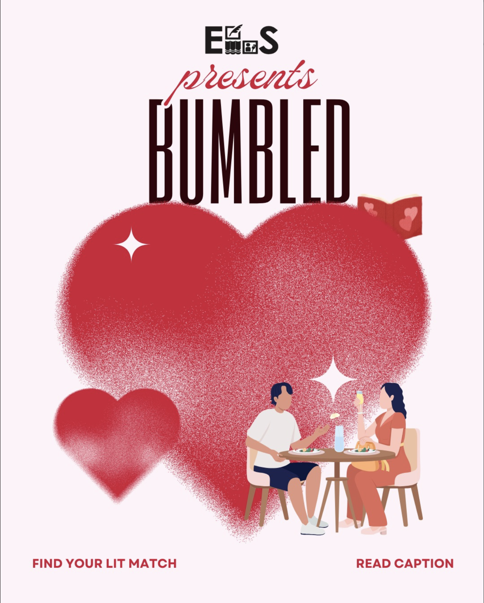
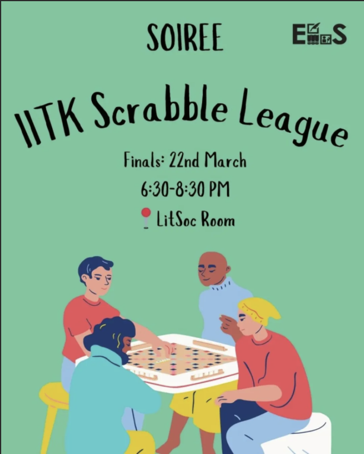
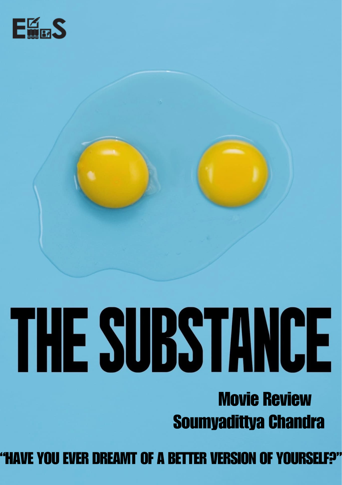
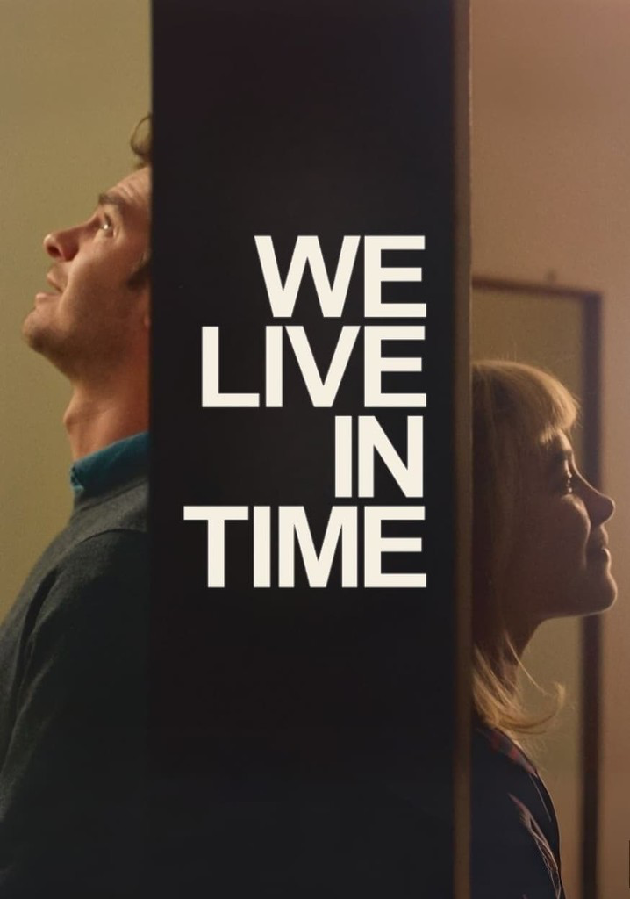
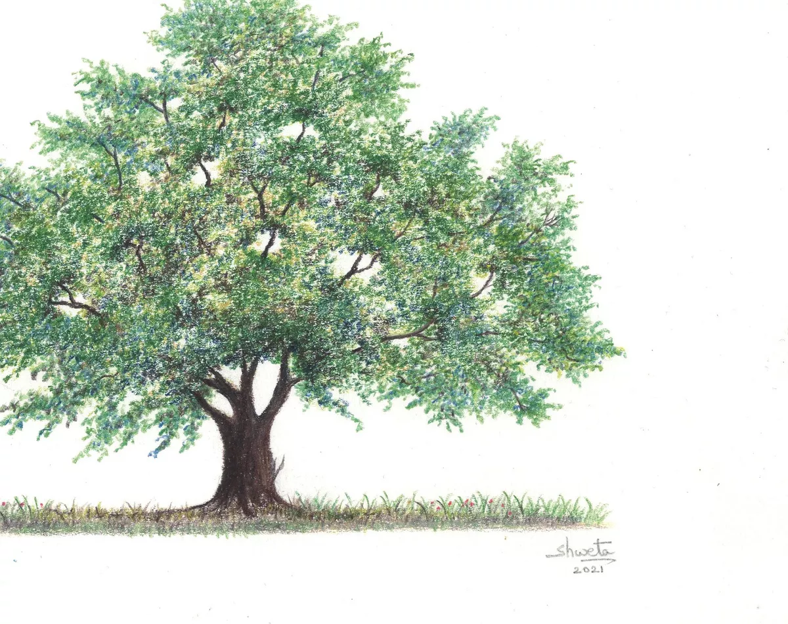
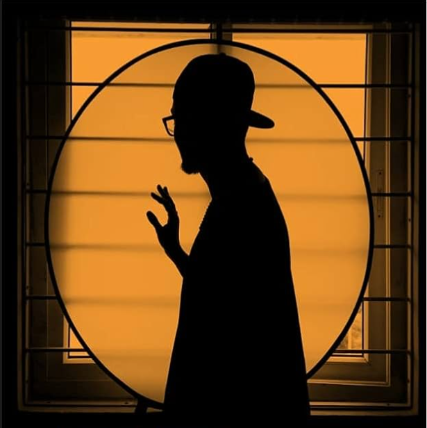

The English Literary Society at IIT Kanpur fosters a vibrant community of literature and writing enthusiasts. Join us for workshops, poetry readings, and creative events that bring words to life.
Learn more →ELS is bringing you 10 days of poetic magic with Poetry Week.
We’ll be sharing unique prompts every alternate day—designed to inspire, challenge, and ignite your inner poet.
ELS welcomed word-lovers to a battle of wit, tiles, and vocabulary.
From Dumb Charades and Mafia to Just A Minute, each event offered a lively platform for creative expression, quick thinking, and collaborative fun.

Valentine’s Day got the literary treatment with ELS’s take on romance and reading lists.
Genre-based matchmaking led to poetic pairings and surprising sparks—because nothing says love like a debate over Kafka.

The IITK Scrabble League 2025 offered a competitive yet welcoming platform for players to sharpen their vocabulary and strategy.
A competitive yet friendly tournament that sharpened minds and built community.

by Soumadittya Chandra · May 2025
A review of Coralie Fargeat’s body-horror film dissecting beauty, identity, and society’s obsession with youth.

by Sritama Sarkar · March 3,2025
A melancholic exploration of memory, time, and tenderness through cinema.
by Shivam Tyagi · October 25, 2024
A poem dedicated to the wait for his love to confess her love to him.

by Satyaki Banerjee · 25 October 2024
A spiritually introspective piece composed in a unique numerological constraint—27 lines of exactly 27 letters Each
by Kajori · October 25, 2024
A dark wizard, exiled in a void for a century, rediscovers hope, love, and purpose upon realizing a girl from the real world is reading his story—and may be the one his dying mother foresaw.

by Aditya V · October 12, 2024
A dark wizard, exiled in a void for a century, rediscovers hope, love, and purpose upon realizing a girl from the real world is reading his story—and may be the one his dying mother foresaw.